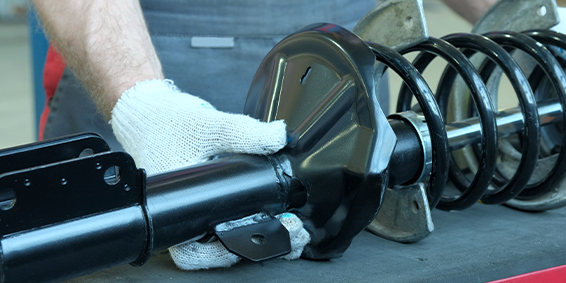
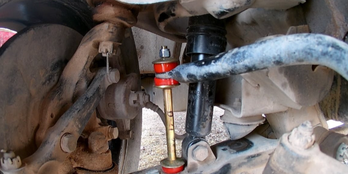

Servicio de revision a Suspension
Por Carol L.
Fecha: 15 de Enero de 2024
El todoterreno del Sr. García presenta síntomas de problemas en la suspensión y dirección, como una sensación de inestabilidad al conducir, vibraciones en el volante y dificultad para mantener el control del vehículo en terrenos irregulares Carol realizo una inspección visual del vehículo para buscar signos de desgaste o daño en los componentes de la suspensión y dirección. Conduce el vehículo para experimentar directamente los problemas reportados por el Sr. García y evaluar el comportamiento de la suspensión y dirección en diferentes condiciones de conducción. Identifico que los amortiguadores delanteros están desgastados Inspecciona los bujes de la barra estabilizadora y los brazos de control para detectar posibles problemas de desgaste o daño. Solucion: Instalacion de amortiguadores delanteros nuevos Reemplaza los extremos de la barra de dirección y ajusta la alineación de las ruedas. reparacion y/o reemplazo de los bujes de la barra estabilizadora según fue necesario. Lubrica todos los componentes de la suspensión y dirección para asegurar un funcionamiento suave y duradero.
herramientas utilizadas: Llaves y herramientas para desmontar componentes de la suspensión y dirección. Amortiguadores delanteros nuevos. Extremos de barra de dirección nuevos. Kit de reparación para bujes de la barra estabilizadora. Grasa para lubricar componentes de la suspensión y dirección.